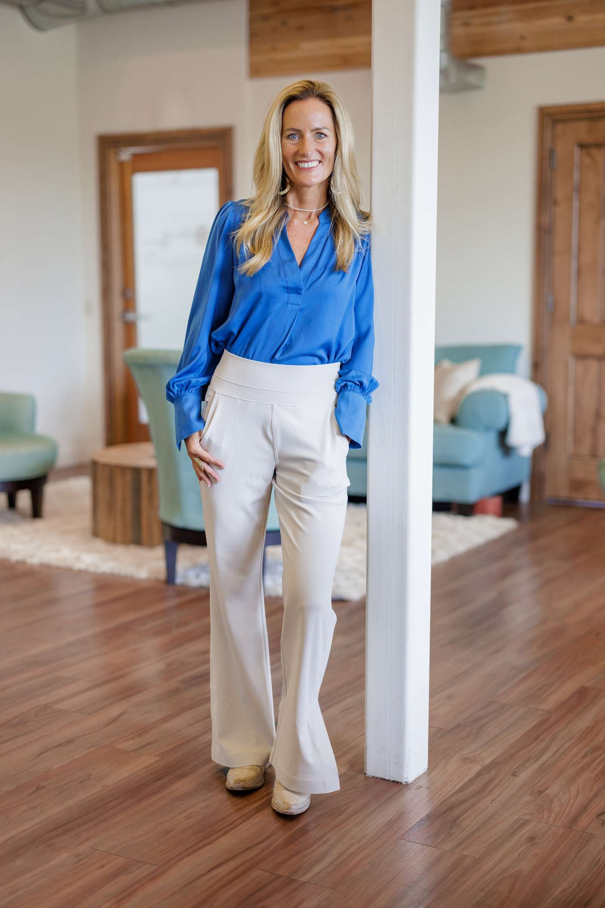
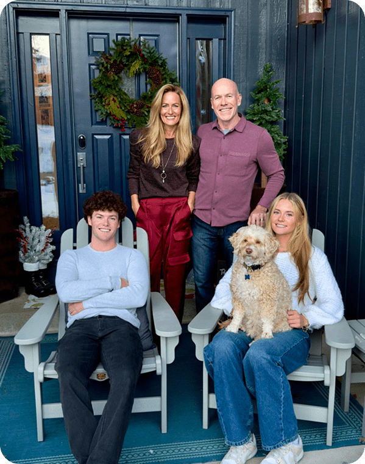

Her Story
Jennifer Mulholland is a soul guide, modern mystic, spiritual teacher, retreat leader, author, and craftswoman of sacred containers. Her mission: helping people embody their light, trust their inner knowing, and live attuned to the wisdom of their own soul.

The Beginning
Her spiritual journey began early. Her grandmother was a third-degree Reiki healer, and her mother introduced her to spiritual traditions in childhood — by age ten, Jennifer was already exploring meditation, energy work, and intuitive development.
A Division I lacrosse player and team captain at the University of Delaware, she felt an inner pull toward the West. Trusting that inner knowing, she followed it to the University of Utah — where she met a Jungian psychologist who became her mentor in meditation, vision quests, intuitive development, dreamwork, and past-life integration.
That lesson crystallized for Jennifer the day her son experienced a leg injury. Trusting her intuition, she followed it to exactly the neurosurgeon who restored his movement — a turning point that continues to shape how she teaches others to listen to their own inner senses.
Business & Spirit
Before her full-time work as a soul guide, Jennifer spent decades in corporate leadership — serving as Chief Innovation Officer for a Fortune 500 company and co-leading Plenty Consulting, where she facilitated the Lantern Leadership Retreat and the Meridian Strategic Planning Process for executives. Her clients included global organizations like Fidelity Charitable, World Wildlife Fund, Wounded Warrior Project, and PBS.
She co-authored Leading with Light: Choosing Conscious Leadership When You're Ready for More — the book that lays the foundation for soul-led living, in business and beyond.
Explore the book →A Preview — Flip to Meet Jennifer
Meet Jennifer
Jennifer Mulholland is a soul guide, modern mystic, spiritual teacher, retreat leader, author, and craftswoman of sacred containers — helping people embody their light and trust their inner knowing.
1Her Story
Guided by intuition since childhood, Jennifer followed an inner pull from a Division I lacrosse career at Delaware to the University of Utah, where a Jungian psychologist mentored her in meditation, dreamwork, and past-life integration.
2Her Philosophy
"Business and spirit are not separate. Transformation emerges when we slow down, listen more deeply, and reconnect with ourselves."
3Training & Modalities
In Her Words
"When we learn to truly listen, life speaks."
A lesson that crystallized the day her intuition led her family to exactly the care her son needed.
5Drag or tap to flip
Training & Modalities
Educated in Exercise & Sports Science, Psychology, and Coaching — and trained across a wide range of healing modalities:
"Business and spirit are not separate. Transformation emerges when we slow down, listen more deeply, and reconnect with ourselves."

Today
Jennifer lives in Park City, Utah, with her husband Kristian, their two children, and their goldendoodle, Toby. It's a life built around the same practice she teaches — presence, listening, and trusting what she already knows.

"She has a talent for gently posing deep questions that prompt self-awareness and self-discovery."
Suzanne Graney
Read more client reflections →Soul Notes — monthly essays, meditations, and practices for soul-led living, delivered straight to your inbox.